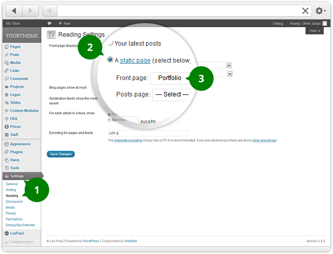

Installing, Securing WordPress and First Steps
Installing WordPress
If you need help installing WordPress, follow the instructions in WordPress Codex or you can watch the instructional video (thanks to WooThemes).
Securing WordPress
You can improve your WordPress installation security taking these steps:
- Set the Authentication Unique Keys and Salts in
wp-config.phpfile. - Set the $table_prefix variable in
wp-config.phpfile (do not use the default value of "wp_"). - Do not use "admin" as user name and set strong passwords.
- After installation is done, remove
wp-admin/install.phpfile. - Keep backups of the database and WordPress installation.
- Keep your WordPress installation up to date.
For additional security steps, tips and settings check Security section of theme's admin panel.
Starting with WordPress
Additional resources for WordPress beginners:
Installing, Updating !LesPaul Theme
Installing !LesPaul theme
To install !LesPaul WordPress theme please follow these steps:
- Download a theme package file from ThemeForest. Unzipp the package file on your computer - theme package folder will be created.
- In WordPress admin navigate to Appearance » Themes » Install Themes » Upload and select the zipped theme file inside
installsubfolder of the previously unzipped theme package folder. - Now press [Install Now] button and wait until theme is uploaded and installed.
- Once installation is done, activate the theme in Appearance » Themes.
- Quickstart guide will appear to guide you through basic theme settings.
Envato WordPress Toolkit - automatic theme update
The theme supports automatic updates via Envato WordPress Toolkit plugin and offers the plugin for installation immediately after the theme is activated. To use the plugin you will need a ThemeForest API key. The plugin will then check for all your purchased WordPress items updates and offer you an automatic update installation (it is possible to backup your old theme version too, so you won't loose your custom changes of theme source files).
Updating !LesPaul theme
To update the theme, login to ThemeForest, head over to your downloads section and re-download the theme like you did when you bought it.
To install the new updated theme unzipp the downloaded zipped theme package file on your computer. Open the theme package folder and head over to install subfolder where you will find a theme installation ZIP file.
Now use one of these options to update the theme:
-
Easier, but might take longer time:
Unzip the theme installation ZIP file on your computer. Upload the unzipped theme folder using FTP client to your server (intoYOUR_WORDPRESS_INSTALLATION/wp-content/themes/) overwriting all the current theme files.Note: If you didn't make any changes to the theme files, you are free to overwrite files with the new ones without the risk of loosing theme settings, pages, posts, etc, and backwards compatibility is guaranteed. In case you have made changes to the theme files, make sure you have a backup copy of your changes before you overwrite theme files. -
More advanced, but quicker and safer solution:
Upload the theme installation ZIP file using FTP client to your server (intoYOUR_WORDPRESS_INSTALLATION/wp-content/themes/). Using your FTP client, rename the old theme folder (for example fromlespaultolespaul-old). When the old theme folder is renamed, unzip the theme installation zip file on the server (you will probably have to do this via web based FTP client of your host provider). After checking if the theme works fine, delete the renamed old theme folder from server (or keep it as a backup, but it will unnecessarily take space on your server...).
Installing Plugins
At this stage you have probably noticed a warning, asking you to install recommended plugins.
These are needed to get the included premium sliders, contact forms, excelent SEO results, better pagination and make your website fully high DPI (or Retina) screens compatible. Installing the plugins is very simple, you just need to click "Begin installing plugins" and you will be redirected to the plugin installation page where you can install and activate any plugin you need.
Please note that these plugins are totaly optional and the theme will work perfectly also without them.
You should, however, install and activate included premium slider plugins as those offer great animated sliders (banners) features.
The theme is high DPI (Retina) screen ready, however, to make your content images also high DPI screen ready, it is recommended to use WP Retina 2x plugin (you can read the tutorial on this plugin written by its author).
Contact Form 7 plugin will create forms for you and is totally optional, so feel free to use your preffered solution. However, the theme demo content includes predefined form example for Contact Form 7 plugin. Very easy to use form creator is also included with JetPack plugin by WordPress.
WordPress SEO by Yoast is great WordPress SEO plugin and theme provides full integration with this plugin (including its SEO breadcrumbs and Google Authorship support).
WP-PageNavi is yet another optional plugin which just provides advanced pagination for your blog pages.
WooCommerce
You can turn your website to an e-shop. The theme offers full integration for WooCommerce - excelling eCommerce plugin and offers you its installation after theme activation. To test the plugin you can install a dummy plugin demo content (the dummy_data.xml file) that can be found inside the plugin installation folder (so inside YOUR_WORDPRESS_INSTALLATION/wp-content/plugins/woocommerce/ folder). Just upload the demo XML file via Tools » Import.
If no widgets will be inserted into these widget areas, the fullwidth (no sidebar) layout will be applied on these pages.
Other WooCommerce pages are standard WordPress pages, so please go to the page edit screen to set the page sidebar layout there..
Installing Theme Demo Content
-
Once the theme has been installed, open the
demo-contentfolder inside the theme package folder downloaded from ThemeForest and unzipped in your computer. -
In WordPress admin navigate to Appearance » Options Export/Import. Open and copy the content of
1-webman-admin-panel.txtfile and paste it into "Import" field. Save the settings.Note: if the admin panel is not de-branded (should become gray, not black), press the [Save changes] button in theme admin panel once again. This is due to setting up the local URLs to design images. - Make sure the permalinks structure is set to "Post name" (in Settings » Permalinks) - this is required for the right content displaying in some shortcodes and is recommended option for better SEO.
- Make sure the Soliloquy slider and Contact Form 7 plugin is installed and activated.
-
Navigate to Plugins » Add new and click the Upload link below the title. For file upload field set the
2-lespaul-importer-plugin.zipfile insidedemo-contentfolder. Click [Install Now] button and activate the plugin.Important: first you have to disable the WordPress Importer plugin if you have it installed and activated.This custom plugin is just a slight variation on WordPress Importer plugin. It makes sure all the demo images are imported to your website (if there is no connection problem of course). - Then navigate to Tools » Import and choose the "WordPress" option.
-
For "Choose a file from your computer:" upload field select the
3-democontent-lespaul.xmlfile and press [Upload file and import] button to start the import procedure. - For import settings choose the author, under whom the content is imported and check to download attachments (images in this case). Press [Submit] button.
-
Setting up sliders demo content:
- Soliloquy - this plugin should already be ready and contain "Content width" and "Fullwidth" sliders.
- LayerSlider WP - navigate to LayerSlider WP and click the "Import sample sliders" link right from "LayerSlider sliders" title.
- Revolution Slider - navigate to Revolution Slider and click [Create New Slider] button. Set the slider title to "Home" and slider alias to "home" (both without quotation marks) and press the [Create Slider] button. Reopen the slider for editing and at the bottom of the screen click the "Show Export / Import" link and set the
4-revolution-slider-home.txtfile for "Choose the import file:" option. Press [Import Slider] button to install Revolution Slider plugin demo slider.
- Now we need to set up homepage and blog page. Navigate to Settings » Reading and set "A static page (select below)" in "Front page displays" section. Select "Welcome to !LesPaul" page as your website's front page and "Blog" as posts page.
-
To set the menu, navigate to Appearance » Menus and select:
- "Navigation" for Main navigation, Footer menu and Sitemap links select fields
- "Top bar links" for "Landing page" page navigation select field
-
Finaly we need to set widget areas and widgets. Navigate to Appearance > Widgets and set the widgets according to
5-widgets-and-widget-areas.pngwidget area preview image.
Your demo website should be set now.
Setting Up Home and Blog Page
Set up a WordPress Front Page (Homepage)
- In WordPress admin navigate to Settings » Reading.
- For "Front page displays" option set "A static page (select below)".
-
Select the front page from dropdown list. This page will become your home page.
Select the posts page from dropdown list. This page will become your blog page.
The theme doesn't contain any special "Homepage" page template. You can set any page as a homepage, however, probably the most suitable ones are those with these page templates assigned: Default Template, Blog, Portfolio, Sections and during the website building process also Under construction.
Page Templates
Assigning a Page Template
- On page edit screen choose one of predefined page templates in Page attributes metabox on the right.
- Once you set the page template, notice how page settings tabs changed to offer you only the options related to specific page template.
You can set several different page options for each page template. Options in Page settings metabox will be displayed specificaly for selected page template.
Disable page templates
You can disable unnecessary page templates in theme admin panel. Just navigate to Appearance » Theme Options » Content » Page templates and set appropriate options.Available page templates:
Default page template Page layout and how the template can be used
As you can see in the scheme left, even a default WordPress page template can display a lot of information in !LesPaul theme.
In page settings tabs you can set these options:
-
General tab
You can preview a page layout here, tweak the main page heading area (the main title), disable several website elements, choose to display page attachments in a downloadable list (will not display attached images), set website header position, set layout and set a restricted access (Client Area functionality must be enabled). -
Slider tab
You can enable (choose) and set a slider that will be displayed on the page. Slider area can display:- Single static image (page featured image)
- Single video (if featured image set for the page, it will be used as video cover image - video will play back after clicking the image)
- Animated banner/slideshow using included premium slider plugins (or use your own preferred one)
-
Sidebar tab
You can set whether there will be a sidebar displayed on the page, which widget area will be used as sidebar and where the sidebar will be displayed.You can create as many widget areas as you want in theme admin panel. Just navigate to Appearance » Theme Options » Widget Areas and add some widget areas. -
Background tab
You can set main heading area and actual page background color and image here.
Blog page template Page layout and how the template can be used
Blog page template displays blog posts. You can also set slider and even page content that will be displayed above posts list.
In page settings tabs you can set these options:
-
Blog tab
You can preview a page layout here, set the number of posts displayed on the page (pagination will be displayed automatically) and select posts categories - you can either hide posts from selected categories or display posts from those selected categories only. You can also choose one of several blog layouts here. -
General tab
You can tweak the main page heading area (the main title), disable several website elements, choose to display page attachments in a downloadable list (will not display attached images), set website header position and set page layout. -
Slider tab
You can enable (choose) and set a slider that will be displayed on the page. Slider area can display:- Single static image (page featured image)
- Single video (if featured image set for the page, it will be used as video cover image - video will play back after clicking the image)
- Animated banner/slideshow using included premium slider plugins (or use your own preferred one)
-
Sidebar tab
You can set whether there will be a sidebar displayed on the page, which widget area will be used as sidebar and where the sidebar will be displayed.You can create as many widget areas as you want in theme admin panel. Just navigate to Appearance » Theme Options » Widget Areas and add some widget areas. -
Background tab
You can set main heading area and actual page background color and image here.
Landing page template Page layout and how the template can be used
Setting up a Custom Landing Page Menu:
Landing page template is usually used to display direct sales action and is a great marketing tool. You can achieve a lot with great design and layout of landing page and !LesPaul offers a great flexibility in this matter.
As you can see from the scheme left, Landing page template doesn't display top bar and breadcrumbs and all other website elements can be customized.
For each Landing page template there will be a new menu location created in Appearance » Menus . This will allow you to set a custom menu for each Landing page individually or disable the menu on such page altogether.
In page settings tabs you can set these options:
-
Landing page tab
You can preview a page layout here, set a different website header text (if right navigation is not in use), choose or disable widget areas for Above Footer Widgets and Footer Widgets area. If required, credits text in the website footer can be changed too and you can even set a custom tracking code (like Google Analytics) specially for this page template. -
General tab
You can tweak the main page heading area (the main title), set website header position and set page layout. -
Slider tab
You can enable (choose) and set a slider that will be displayed on the page. Slider area can display:- Single static image (page featured image)
- Single video (if featured image set for the page, it will be used as video cover image - video will play back after clicking the image)
- Animated banner/slideshow using included premium slider plugins (or use your own preferred one)
-
Sidebar tab
You can set whether there will be a sidebar displayed on the page, which widget area will be used as sidebar and where the sidebar will be displayed.You can create as many widget areas as you want in theme admin panel. Just navigate to Appearance » Theme Options » Widget Areas and add some widget areas. -
Background tab
You can set main heading area and actual page background color and image here.
Map page template Page layout and how the template can be used
Map page template is suited best for contact pages where you need to display big map. Map will be displayed in slider area.
The actual page content will be displayed below the map. If you need to display a contact form on your newly created contact page with Map page template, use a plugin such as Contact Form 7 or form builder in JetPack plugin, for example.
In page settings tabs you can set these options:
-
Map tab
You can preview a page layout here, set height of the map (the width can not be set as the map will stretch the whole website box width), zoom, map styling, centering and actual map location.
It is possible to set several map locations if you want and display a different info bubble for each. Map will be centered to the first map location set. If you do want to set a specific map center location, but don't want to display a map marker on it, set "-" in "Location info text" field.
Also, you can easily find out the GPS coordinates of desired map locations by clicking the "You can use external app to find geographic coordinates" link. -
General tab
You can tweak the main page heading area (the main title), disable several website elements, choose to display page attachments in a downloadable list (will not display attached images), set website header position, set layout and set a restricted access (Client Area functionality must be enabled). -
Sidebar tab
You can set whether there will be a sidebar displayed on the page, which widget area will be used as sidebar and where the sidebar will be displayed.You can create as many widget areas as you want in theme admin panel. Just navigate to Appearance » Theme Options » Widget Areas and add some widget areas. -
Background tab
You can set main heading area and actual page background color and image here.
Portfolio page template Page layout and how the template can be used
Portfolio page template displays a list of Projects custom posts. You can choose from 5 different projects list layouts (1 - 5 columns) and set several projects list options.
The actual page content will be displayed above projects list.
In page settings tabs you can set these options:
-
Portfolio tab
You can preview a page layout here, tweak portfolio projects list settings here. If you set a projects main category and enable filter, the filter will be created from the specific main category sub-categories. Otherwise, when all projects (regardless project category) are displayed and filter is enabled, filter will be created from all projects categories (main and sub-categories). -
General tab
You can tweak the main page heading area (the main title), disable several website elements, choose to display page attachments in a downloadable list (will not display attached images), set website header position, set layout and set a restricted access (Client Area functionality must be enabled). -
Slider tab
You can enable (choose) and set a slider that will be displayed on the page. Slider area can display:- Single static image (page featured image)
- Single video (if featured image set for the page, it will be used as video cover image - video will play back after clicking the image)
- Animated banner/slideshow using included premium slider plugins (or use your own preferred one)
-
Sidebar tab
You can set whether there will be a sidebar displayed on the page, which widget area will be used as sidebar and where the sidebar will be displayed.You can create as many widget areas as you want in theme admin panel. Just navigate to Appearance » Theme Options » Widget Areas and add some widget areas. -
Background tab
You can set main heading area and actual page background color and image here.
Redirect page template How can the template be used
Redirect page template will only redirect to specific URL. You can either set custom URL or redirect to another page of your website. Redirect page template can be used for example on a parent page without any content, which you need to redirect to its first child page.
In page settings tabs you can set these options:
-
Redirect tab
There are not much settings for Redirect page template. Just set the custom URL link, or choose a page of your WordPress website and set a redirect status (temporary or permanent redirect).
Sections page template Page layout and how the template can be used
Sections page template is one of the perfect candidates for complex home page layout. The content of this page can be split into vertical sections that can be styled afterwards using custom CSS in a child theme (that's the right way of doing that ;)).
[section class="CUSTOM_CSS_CLASS"]CONTENT[/section] shortcode. The "class" parameter of the shortcode is optional, but helps when applying custom CSS styles on the section. Also section ID will be determined from this class attribute (first class will be taken and prepended with "section-").You can already use predefined (and pre-styled) "alt" class if you want (the shortcode would look like
[section class="alt"]CONTENT[/section] in that case).
[section] shortcode can be used on this page template only as otherwise it will break the website layout and design.
In page settings tabs you can set these options:
-
General tab
You can preview a page layout here, tweak the main page heading area (the main title), disable several website elements, choose to display page attachments in a downloadable list (will not display attached images), set website header position, set layout and set a restricted access (Client Area functionality must be enabled). -
Slider tab
You can enable (choose) and set a slider that will be displayed on the page. Slider area can display:- Single static image (page featured image)
- Single video (if featured image set for the page, it will be used as video cover image - video will play back after clicking the image)
- Animated banner/slideshow using included premium slider plugins (or use your own preferred one)
-
Background tab
You can set main heading area and actual page background color and image here.
Sitemap page template Page layout and how the template can be used
Sitemap page can be used either as a website sitemap or as archives page (or both in one page actually ;)). Sitemap page template is fullwidth so you can not set a sidebar here. It will display most recent posts, most recent projects, custom menu, list of blog categories and monthly archives.
Notice, there is no all pages list. This is replaced with custom menu (you can set it in Appearance » Menus) as you will have much greater control over such list of links.
The actual page content will be displayed above all sitemap links lists.
In page settings tabs you can set these options:
-
General tab
You can preview a page layout here, tweak the main page heading area (the main title), disable several website elements, choose to display page attachments in a downloadable list (will not display attached images), set website header position, set layout and set a restricted access (Client Area functionality must be enabled). -
Slider tab
You can enable (choose) and set a slider that will be displayed on the page. Slider area can display:- Single static image (page featured image)
- Single video (if featured image set for the page, it will be used as video cover image - video will play back after clicking the image)
- Animated banner/slideshow using included premium slider plugins (or use your own preferred one)
-
Background tab
You can set main heading area and actual page background color and image here.
Under Construction page template Page layout and how the template can be used
Under Construction page can be set as homepage while you are creating your website content. Your visitors will see only this page template while you can still check your pages and posts online (as only you will know the URL to those pages - there is no menu in Under Construction page template).
You can not set a sidebar for this page as its layout spreads full width of the website container. However, it is possible to use boxed or fullwidth layout for this page specificaly.
In page settings tabs you can set these options:
-
Under construction tab
You can preview a page layout here, set date and time when your website is due to go live. This setting will be used to display countdown timer on Under Construction page template. You can set a custom website header text for this template which will be displayed right from logo, set custom credits text and even choose a widget area that will be displayed below countdown timer (you can, for example, place a newsletter signup form widget into such widget area). -
Slider tab
You can enable (choose) and set a slider that will be displayed on the page. Slider area can display:- Single static image (page featured image)
- Single video (if featured image set for the page, it will be used as video cover image - video will play back after clicking the image)
- Animated banner/slideshow using included premium slider plugins (or use your own preferred one)
-
Background tab
You can set page background color and image here.
Posts
Setting up a Post Format
- On post edit screen choose one of predefined post formats in Format metabox on the right.
- Once you change the post format, notice an information area displayed beneath the post visual content editor. The area contains info about how to use the chosen post format.
Post excerpt will be displayed in posts list (does not apply for Link, Quote and Status post formats). If no excerpt set, a portion of post content will take its place in posts list. Post excerpt will also be displayed at the top of the post content on single post page. Please note that you will probably have to enable post excerpt field in "Screen Options" first.
If you set the "Read more" inside a post content and you also set a post excerpt, first the post excerpt followed with post content (until "Read More" tag) will be displayed in posts list.
The theme supports several post formats. Please read the information on post edit screen on how to set up each supported post format.
Disable post formats
You can disable unnecessary post formats in theme admin panel. Just navigate to Appearance » Theme Options » Blog » Post formats and set appropriate options.Supported post formats:
Posts Settings metabox
General tab
You can tweak the post main heading area (the main title, subtitle), disable several website and post content elements and choose to display post attachments in a downloadable list (will not display attached images).
Sidebar tab
You can set whether there will be a sidebar displayed on the post, which widget area will be used as sidebar and where the sidebar will be displayed.
Background tab
You can set main heading area and, if boxed website layout set, the actual post background color and image here.
Standard post What is it?
This is basic standard blog post layout. It is recommended to set a featured image for this post format as it will be displayed in posts list alongside with post excerpt (and in [posts] shortcode).
Audio post What is it?
Displays audio player to play SoundCloud audio file. Could be used for Podcasting. Audio player will be displayed in posts list alongside with post excerpt. It is good to set a featured image for this post format. It will be displayed in [posts] shortcode and also on single post page above the audio player.
Gallery post What is it?
A gallery of images will be displayed in slideshow on blog pages for this post formats. Slideshow will be generated from first gallery found in post content. It is recommended to set a featured image for this post format (to be displayed in [posts] shortcode).
Link post What is it?
Displays useful URL link. Insert a link directly anywhere into post content. The link will be emphasized on blog pages. Please note that you should keep the link description short - the best advice here is to try it (or see the video above).
Quote post What is it?
A quotation. Please place the actual quote directly into post content and format it as blockquote. You can use a [Styles] button to insert a cite HTML tag to format quote source.
[testimonials /] shortcode - check the WordPress contextual help for more info on shortcode. If the post is used for testimonials, you can set a featured image and it will be used as a photo of quoted person.You should also assign all the quote posts used as testimonials to a special category and if you need to hide them on your website's blog page, just exclude the category from displaying on a blog page.
Or, additionally you can make all these posts "private" (in "Publish" metabox on post edit screen). Such posts should be normally displayed to post author only, but
[testimonials /] shortcode is able to display them also for other website visitors while still keeping these posts hidden on blog page to anybody else but post author. You will need to set up a private parameter for the shortcode to 1 like so: [testimonials private="1" /].
Status post What is it?
A short status update, similar to a Twitter status update. Place the actual status text directly into post content. Post author avatar will be displayed on this post format.
Video post What is it?
Displays video player to play the predefined video file. You can place video description into post content. It is recommended to set a featured image for this post format (to be displayed in [posts] shortcode).
Additional Content Types
!LesPaul theme comes packed with useful custom content types (custom post types). You can use default predefined Content Modules custom posts alongside optional FAQ, Logos, Prices, Projects and Staff custom posts.
Note
You can disable/enable or change privilegues for custom post types in theme admin panel in Appearance » Theme Options » Custom posts.It is possible to set the same privilegues as WordPress Pages have or as Posts have (check the WordPress codex on how this privilegues/capabilities affect each user group).
Content Modules What are they and how to use them?
Creating an Icon Module
- Navigate to Content Modules » Add new module to create a new Content Module.
-
Set the module title and content. Additionally, you can assign a tag for the Content Module . Tags can be used in
[content_module /]shortcode to randomly display a module from certain tag group - check the WordPress contextual help for more info on shotcodes or navigate to Content Modules » Tags for basic shortcode tag. - Switch over to Icon tab and set "Icon box" checkbox. Read the information on how to set up icons to make them high DPI (Retina) screens ready and tweak additional icon settings. (If required, you can also set a custom module link .)
- Set your custom icon as a featured image (or use predefined icons that are all high DPI screen ready - you can easily upload your own icons).
-
Publish the Content Module. Now you can use
[content_module /]shortcode to place the module anywhere on the website (or use dedicated !LesPaul Content Module widget in widget areas).
Content Modules can be used as a content injection to various website areas. You can display it in a page or post content or in any widget area (custom widget included). Content Modules can be styled as icon boxes, so they are perfect for your services presentation (for example). You can even conveniently group them using tags and then have a module generated randomly just by choosing the Content Module tag group (there will never be displayed 2 identical modules from same tag group when randomized).
Display it on website:
Use [content_module /] shortcode to display specific Content Module (or to randomize it from specific tag group) on the page/post. Please check the WordPress contextual help for more info on shortcode.
Or use !LesPaul Content Module widget to display any module in any widget area.
Content Module types:
"Content module"
This is the default layout of Content Modules (used when "Icon box" isn't set). When featured image set for the module, it is displayed first, then the module title and then the content. You can surely hide the image and the title easily in the shortcode or in widget.
"Icon box"
If Icon box option is selected, you can upload your own icon as a module featured image (several icon packs are packed with the theme). Icon boxes can be displayed in 2 layouts: normal one will display a small icon on the left and title and content on the right, while centered layout displays large icon on the top and title and content below, all text and icon centered. Displayed icon size also depends on whether an icon background color is set for the module.
Change privilegues
You can change privilegues for this custom post type in theme admin panel in Appearance » Theme Options » Custom posts.It is possible to set the same privilegues as WordPress Pages have or as Posts have (check the WordPress codex on how this privilegues/capabilities affect each user group).
FAQ - Frequently Asked Questions What are they and how to use them?
Adding a New FAQ (Question + Answer)
- Navigate to FAQ » Add new answer to create a new FAQ.
- Type the question inside the post title area and the answer inside post content.
- Choose existing or assign a new FAQ category.
-
Publish the FAQ. You can then use
[faq /]shortcode to display FAQ list on the page/post - please check the WordPress contextual help for more info on shortcode. Or go directly to FAQ » FAQ categories and grab a shortcode to display FAQ from specific category.
The theme offers a handy FAQ (Frequently Asked Questions) management where you can easily add and edit questions (answers, actually ;)) just like posts. FAQ can be grouped into categories that will be used to organize them on display.
Display it on website:
Use [faq /] shortcode to display FAQ list on the page/post. Please check the WordPress contextual help for more info on shortcode.
Disable this custom post type
You can disable or change privilegues for this custom post type in theme admin panel in Appearance » Theme Options » Custom posts.It is possible to set the same privilegues as WordPress Pages have or as Posts have (check the WordPress codex on how this privilegues/capabilities affect each user group).
Logos What are they and how to use them?
Adding a New Client/Partner Logo
- Navigate to Logos » Add new to create a new logo.
- Type the client/partner/company name into the title area.
- Upload a logo image (make sure all the logo images - at least in the same category - are the same dimensions as this will make sure they will be displayed nicely in logo list) and set a custom URL link if required.
- Set the optional logo category.
-
Publish the logo. You can then use
[logos /]shortcode to display logos list on the page/post - please check the WordPress contextual help for more info on shortcode. Or go directly to Logos » Categories and grab a shortcode to display logos from specific category.
Logos custom post can be used to easily manage your clients and parthers logos.
They can be grouped into categories, so you can create a separate category for clients and separate category for partners (and for others, of course) and then display them on the website individually.
Display it on website:
Use [logos /] shortcode to display logos list on the page/post. You can display even a short description left or right from logos list. Please check the WordPress contextual help for more info on shortcode.
Disable this custom post type
You can disable or change privilegues for this custom post type in theme admin panel in Appearance » Theme Options » Custom posts.It is possible to set the same privilegues as WordPress Pages have or as Posts have (check the WordPress codex on how this privilegues/capabilities affect each user group).
Prices What are they and how to use them?
Adding a New Price Column/Package
- Navigate to Prices » Add new price to create a new price column.
- Type the price column (package) title into the title area. Add a price package features into unordered list in the post content.
-
Check out the price settings tabs and set appropriate options:
-
Price set up tab
Here you can set the price cost (including the currency sign) and a note or description text displayed below the price cost. It is also possible to set up a price column position (order) in similar way like it is with WordPress Pages. -
Button set up tab
You can set a button text, link and color here. -
Styling tab
You can choose the styling of this price column in the pricing table - whether it is a standard price column, featured price column or pricing table legend. Additionally you can set a custom column background color here.
-
Price set up tab
- Assign a price to a price table.
-
Publish the price. You can then use
[prices /]shortcode to display pricing table on the page/post - please check the WordPress contextual help for more info on shortcode. Or go directly to Prices » Tables and grab a shortcode there.
Prices are used to create a pricing tables. Each price post is basically a price package - a column - in a pricing table.
Display it on website:
Use [prices /] shortcode to display pricing table on the page/post. Please check the WordPress contextual help for more info on shortcode.
Disable this custom post type
You can disable or change privilegues for this custom post type in theme admin panel in Appearance » Theme Options » Custom posts.It is possible to set the same privilegues as WordPress Pages have or as Posts have (check the WordPress codex on how this privilegues/capabilities affect each user group).
Projects What are they and how to use them?
Adding a New Project
- Navigate to Projects » Add new project to create a new project.
- Type in the project title and set the excerpt text. Optionally you can set the post content (check the "Layout" tab for info about project layout).
- Set the featured image. The image is required as it will be used as project preview image in projects list on portfolio pages.
-
On project settings tabs set the appropriate options:
-
Media tab
Here you can set a project type and project main media, like images, video and audio. First set preffered Project media type option as other settings will be revealed according to this selection. -
Attributes tab
You can set a project attributes here (any number of attributes, you can even create a predefined group of attribute names in theme admin panel in Appearance » Theme Options » Custom posts) and custom project URL link (and the link action). You can display project attributes with[project_attributes /]shortcode (check the WordPress contextual help for more info on shortcode) anywhere in project excerpt or content - by default they are displayed on top of project excerpt. -
Heading tab
Tweak the main project heading (or title) display here. -
Layout tab
Choose a project layout here, disable several different website areas, set a sidebar (if required - by default it is disabled on projects). -
Background tab
You can set main heading area and, if boxed website layout set, the actual project background color and image here.
-
Media tab
- Optionally assign a project to a project category. Project categories will be used to filter through the projects or to display multiple portfolios.
-
Publish the project. Set up a Portfolio page template to display a list of projects on the page or use a
[projects /]shortcode to display the projects list anywhere on the website - please check the WordPress contextual help for more info on shortcode.
Projects custom post can be used to showcase your work. You can add single image, image slideshow, audio or video projects.
Each project type has it's own dedicated icon. You can create your own project types with custom icons by navigating to Projects » Projcet types. Just set a new project type name, icon and behaviour (if it displays static image, image slideshow, video or audio).
Display it on website:
Use Portfolio page template to display a list of projects on the page.
Or use [projects /] shortcode to display projects list anywhere on the website (even with filter and short description left or right from the projects list). Please check the WordPress contextual help for more info on shortcode.
There is also dedicated custom !LesPaul Projects widget to display projects list easily in widget areas.
Disable and tweak this custom post type
You can set predefined project attribute names, project layout, disable or change project privilegues in theme admin panel in Appearance » Theme Options » Custom posts.It is possible to set the same privilegues as WordPress Pages have or as Posts have (check the WordPress codex on how this privilegues/capabilities affect each user group).
Staff What is it and how to use it?
Adding Staff Members
- Navigate to Staff » Add new member to add a new staff.
- Type in person's name in title area and add some description text into content.
- Set the featured image - staff profile photo.
- If rich staff member profiles are enabled in Appearance » Theme Options » Custom posts » "Staff" each staff will have own staff info page and additional excerpt area will be displayed in staff list as a short staff description (you can omit this) - it will not be displayed on actual staff page.
-
Check out options in staff info tabs and set appropriate ones:
-
Position tab
You can set a staff member position here. -
Contact tab
These contact information will be displayed also in staff list. You can set a phone, e-mail, LinkedIn and Skype contact here. Please place the social network connections (icons) directly into content and/or excerpt area - use a[social /]shortcode. -
Sidebar tab
This tab will be available only when rich staff member profiles enabled. You can set a staff profile page sidebar widget area and its position here. -
Background tab
You can set main heading area and, if boxed website layout set, the actual staff page background color and image here.
-
Position tab
- You can group staff members in departments and then display specific department staff with description on the page or post.
-
Hit the [Publish] button. You can then use
[staff /]shortcode to display staff list on the page/post - please check the WordPress contextual help for more info on shortcode.
With staff custom post you can easily manage your company's staff info. By default only basic information about staff memebers is displayed (and all of this information is displayed in staff list) but you can enable rich staff members profiles in Appearance » Theme Options » Custom posts » "Staff" and create a custom staff profile pages.
Display it on website:
Use [staff /] shortcode to display staff members list anywhere on the website (even with short description left or right from the staff list). Please check the WordPress contextual help for more info on shortcode.
Disable and tweak this custom post type
You can set whether to use rich staff profiles, disable or change privilegues for this custom post type in theme admin panel in Appearance » Theme Options » Custom posts.It is possible to set the same privilegues as WordPress Pages have or as Posts have (check the WordPress codex on how this privilegues/capabilities affect each user group).
Menu Creating and Using Navigational Menus
!LesPaul supports WordPress Menus, so you can easily create custom navigational menus directly in Appearance » Menus.
Custom menus may contain links to pages, categories, custom links or other content types (use the [Screen Options] button in upper right corner of the screen to decide which ones to show on the menu edit screen). You can specify a different navigation label for a menu item as well as other attributes. You can create multiple menus. To display menus on website you need to assign them to menu locations or use them in conjunction with the Custom Menus widget.
The theme allows you to create as many menus as you want. However these menus can be placed only into predefined locations (see the illustration image for how the location metabox looks like). The main predefined menu locations are:
-
Main navigation
This is main navigation area in the header of the website. The menu can be nested and hierarchically organised. Subtle animation is applied when revealing submenu items, but the menu will work even with JavaScript disabled. -
Footer menu
This menu will be displayed in website footer. It will be displayed as one level menu (without sub-menus). You would most likely want to display the same menu as assigned to main navigation location here. -
Sitemap links
Instead of placing a list of pages into sitemap page, this offers a greater control over links. Most of the time you would display a main navigation menu here.Please note that menu title will be used as section title on sitemap page.
Besides these predefined menu locations there will be new ones created for each landing page. This will allow you to completly disable menu on specific landing pages (simply by not assigning any menu to the location) or to use different menu on such pages.
Creating a Menu
- To create a new custom menu, click on the [+] tab, give the menu a name, and click Create Menu.
- Next, add menu items from the boxes on the left. You’ll be able to edit the information for each menu item, and can drag and drop to put them in order. You can also drag a menu item a little to the right to make it a submenu - to create menus with hierarchy. Drop the item into its new nested placement when the dotted rectangle target shifts over, also a little to the right.
-
When the menu item is on place, you can edit its label and properties. Just click the down arrow in right corner of the menu item to reveal available menu item properties.
For better SEO it is recommended to set up a menu item Title Attribute which will be displayed when mouse hovers the item in menu. Also, !LesPaul theme supports menu item description.
If the Description menu item attribute is not displayed, click the [Screen Options] tab at the upper right corner of the screen and check the attribute in Show advanced menu properties section.
- Don’t forget to click [Save Menu] when you’re finished.
Adding Buttons to a Menu
- To convert a menu item into a button you need to assign one of the button classes to it. Please check the contextual help (click the [Help] tab in the upper right corner of the screen) for all available CSS classes you can assign to a menu.
- Once the help is revealed, click the "Advanced Menus" tab on the left and read the instructions in How to make the menu item a button? section.
Assigning Icons to Menu Items
- To add an icon to menu item you need to assign one of the icon classes to it. Please check the contextual help (click the [Help] tab in the upper right corner of the screen) for all available CSS classes you can assign to a menu.
-
Once the help is revealed, click the "Advanced Menus" tab on the left and read the instructions in How to insert an icon into menu item? section.
TIP
All the icon classes are listed in a table in contextual help. If you are editing a long menu it could be quite time consuming and awkward to go to the top of the screen to copy the icon class from table and then scroll down to menu item to insert it.
That's why the table can be pinned to the right edge of the browser window and it will slide out when you hover over it. Just click the Stick table right link - see the image. Note, that you will still need to leave contextual help open.
Widgets and Widget Areas
Widget Areas
Widget areas can be used as sidebars, displayed using [widgets /] shortcode (check the WordPress contextual help for more info on shortcode) or displayed in predefined website areas, such as footer.
You can open the widget area just by clicking the arrow right from its title. Assign widgets to the area just by dragging them into open widget area below its description text. When no widget is assigned to the widget area, it will not be displayed.
!LesPaul creates 5 predefined widget areas :
-
Default Sidebar
This area is displayed as default sidebar. -
Top Bar Widgets
Area will be displayed horizontally and can take maximum of 2 widgets (most suitable are Custom Menu, Text or Search widget). -
Above Footer Widgets
Will display up to 5 widgets horizontally above the website footer. This area can be disabled per page basis. -
Footer Widgets
Website footer widget area takes up to 5 widgets and lets you create amazing website footers. -
Clients Area Access Denied
This widget area will be available only if Client Area functionality is enabled and will be displayed on "Access denied" pages.
In addition to predefined widget areas you can create as many custom widget areas as you need. Just navigate to theme admin panel - Appearance » Theme Options » Widget Areas.
Custom Widgets
The theme also comes with these custom widgets included :
-
!LesPaul Contact
Displays custom specially styled contact information (including opening hours and spam protected email). -
!LesPaul Content Module
Displays specific Content Module custom post (in normal or centered layout). -
!LesPaul Posts
Advanced posts list. Can display recent, random, popular or upcoming posts from selected categories or from all posts. Displays also post featured image (post type icon if no featured image set). -
!LesPaul Projects
Displays a list of random or recent projects (their featured images only). -
!LesPaul Submenu
Displays submenu of subpages (of the current page). Can display also page parents or just children pages. You can select how to order the pages. -
!LesPaul Twitter
Displays tweets and description from specific Twitter account.
Widgets and Widget Areas:
Styles and Shortcodes
Shortcodes and Shortcode Generator How to use it?
Shortcodes
Shortcodes are basically commands you place into page/post/text widget content that will create content elements that are not possible to create or would be otherwise complicated to create. Some shortcodes can be replaced with Styles in this theme, but with shortcode you have greater flexibility as you can edit them easily any time in the future (although they might not look good in content editor unlike Styles).
WordPress offers couple of shortcodes natively and one of them is [gallery /] shortcode. This theme even enhaces this shortcode's functionality, but as WordPress styles it in visual editor, you will have to switch to "Text" editor to edit it.
Shortcode Generator
With integrated Shortcode Generator it is very easy to choose, tweak and insert any shortcode into the post or page content. Simply click the [S] button in visual editor, select a shortcode from dropdown on top, tweak its settings and press the [Insert into editor] button to insert the shortcode at the current position of the cursor in content area.
As you can't use Shortcode Generator everywhere (visual editor has to be present on the page) there is a complete shortcodes documentation in WordPress contextual help - feel free to check it out.

[Styles] button How to use it?
[Styles] button can be found (the same like Shortcode Generator button) in second row of buttons in WordPress visual editor (please note that you might need to click the [Show/Hide Kitchen Sink] button at the end of the first button row to display the second row of buttons). It is basically a dropdown button with several styles groups and actual styles.
When you click the style it will be applied on selected text in content area. Actually, you should check the little question mark icon () right from style name (or style group name) for information on how to apply the specific style on content element.
The biggest advantage styles have over shortcodes is that they create instant visual feedback and degrades gracefully when you change the theme and use some other that doesn't support the styles. This is caused by creating direct HTML elements in WordPress visual editor.
However, this might not be desirable for non-HTML savvy person as to edit a style in the future you would have to switch to HTML editor or you would have to remove all styles from the selected content element (click the [Remove formatting] button - the rubber button - right from [Styles] button) and apply different styles afterwards. This could be more time-consuming solution in comparison to shortcodes where you just edit parameters.
Another drawback for styles might be inability to replace all shortcodes, so for some functionality you will have to use a shortcode anyway.
As you can see, !LesPaul gives you these two powerful but different approaches to create a content.
To choose the right approach is up to you, but as usually, probably the best result is achieved by fusion of both techniques.
Just for inspiration, I use Styles (and actual HTML elements) whereever possible. Use shortcodes just when there is no other way to dislay what you want.
Theme Options How to use theme admin panel?
Using Theme Admin Panel
-
All the theme options can be set in theme admin panel. To display it navigate to Appearance » Theme Options in WordPress admin menu.
-
After admin panel is displayed, choose the main options category from the admin panel left pane and click the tab at the top to display subcategory options group (the first subcategory tab is selected by default).
Panel contains many different but intuitive input fields. Please, read the option description for more information on each option and how to set it up .
Some options have preset values. To recall a preset value for an option click the option reset button far right from the option name .
- After you set all the required options, don't forget to save your changes by clicking the [Save changes] button.
This theme comes with beautiful WebMan Admin Panel where you can find all the theme settings. It is as easy to use as it gets and offers several different intuitive options fields and input types which help to set the right option value.
When you install the theme, you will be presented with Quickstart Guide. Please read through the steps in this guide carefully and set what is required for your website. The guide is branded by WebMan, but don't worry, as soon as you hit the [Save changes] button for the first time, the admin panel will be debranded. You can actually set your branding to it and brand the WordPress administration and login screen (the actual website frontend branding is sure thing ;)).
All, theme options are self-explanatory or are described well directly in admi panel.
Exporting / importing the theme settings
You can export and save your theme settings and later import them back in Appearance » Options Export/Import section. Please read the available options description for more info on how to export or import theme settings.Search Engine Optimization and Traffic Tracking
Search Engine Optimization
The theme is coded with best SEO practices in mind, meaning it is ready to be displayed on top of search results in search engines such as Google.
Please note though, that this is just basic optimization and you will have to push it further to make the real deal with SEO. For such cases I recommend incredible WordPress SEO by Yoast plugin. The theme integrates with this plugin seamlesly and you can even use its SEO optimized breadcrumbs (once you activate those in plugin, the theme breadcrumbs will be replaced with plugin ones - the styling will be preserved).
You can also read articles about how to make your WordPress site SEO optimized.
rel attributes - you can even use them in [social /] shortcode), you just need to activate it in the plugin!
Traffic Tracking
The theme lets you insert a custom (Google Analytics recommended) tracking scripts. Just insert your script (including <script></script> HTML tags) into Apperance » Theme Options » Tracking.
Note that you can also set not to track the logged in users (and even specify the minimal user account group for this). It means whenever a user with specific user group is logged in to your website, none of the tracking scripts inserted into "Scripts" textarea will be outputed and used.
As a bonus, you can add custom tracking scripts for each Landing page template individually!
Localization How to translate the theme?
Translating the Theme
- Make a copy of the original .PO file in
lespaul/langs/folder. - You need to rename the coppied file. The naming convention is based on the language code (e.g. "pt" for Portuguese) followed with underscore and the country code (e.g. "BR" for Brazil). So, the Brazilian Portuguese file would be named as
pt_BR.po. - Use Poedit to translate the file and export (save) it as MO translation file.
- Upload translated
pt_BR.mofile into the folder of original PO file.
!LesPaul theme is completely translation ready. You can translate the theme using a tool like Poedit. All the required PO translation files can be found in the theme's lespaul/langs/ folder and subsequent subfolders.
For easier translation the theme localization files are split into these sections:
- Website frontend (
lespaul/langs/lespaul_domain.pofile) - this is the bare minimum to translate - Necessary WordPress admin options (
/langs/admin/lespaul_domain_adm.pofile) - recommended to translate for multilingual WordPress administration - Contextual help files (
/langs/help/lespaul_domain_help.pofile) - Theme admin panel translation (
/langs/wm-admin-panel/lespaul_domain_panel.pofile) - translate this only for administrators (if required)
Contextual Help Documentation integrated into WordPress contextual help
This theme extends WordPress contextual help with many useful topics. You will also find a complete shortcodes documentation here. If you get stuck using the theme, please check this source first. If the topic is not displayed in contextual help, you will find a link to online version of this User Manual there.
To access contextual help simply click the [Help] button in the upper right corner of WordPress admin screens.
You can see the sample instructions on how to use contextual help in the image.
Tips and Tricks Additional tips for the theme
Additional Plugins
Here is the list of additional useful recommended plugins:
-
WPML - The WordPress Multilingual Plugin
This is a perfect solution for making your website multilingual. -
Jetpack by WordPress.com
The Jetpack plugin was created directly by WordPress and offers so much features. The most useful ones are social networks sharing buttons (fully styled with this theme) or easy to use form generator. (Please note that the theme doesn't support plugin's Infinite Scroll feature.) -
Post Types Order
This plugin lets you reorganize posts, projects, pricing table columns and other contents of this theme with ease of drag and drop functionality.
Child Themes
-
There is a sample child theme included with the theme. To install and activate it just navigate to Appearance » Themes » Install Themes » Upload and select the zipped child theme file (the
lespaul-child-theme.zipfile) insideinstall/child-themesubfolder of the previously downloaded and unzipped theme package folder on your computer. - Once the child theme is installed, activate it.
-
Now you can put all your custom CSS styles into
YOUR_WORDPRESS_INSTALLATION/wp-content/themes/lespaul-child-theme/style.cssfile.Please note that with !LesPaul you don't have to include@import url("../PARENT_THEME/style.css");stylesheet. Not only that it won't work ;) but also this method is a bit slow, so !LesPaul inserts your child theme stylesheet into a main generated stylesheet automatically.If you also want to change functionality of the original !LesPaul theme, copy the function you want to change from the original (parent) !LesPaul theme and place the function into
YOUR_WORDPRESS_INSTALLATION/wp-content/themes/lespaul-child-theme/functions.php. You can freely modify any theme's function here.This way you can update the parent (original) !LesPaul theme without any worry as all your custom styles and functionality are kept in a child theme.
If you need to make styling or functional changes to the theme, please use the WordPress native child theme functionality. You can read more about child themes on WordPress codex pages. A sample child theme (ready to work with) is packed with the theme, just intall and tweak it to your needs.
Changing Icon Font
- Go to Fontello - icon fonts generator website.
-
Select the icons you want to use on your website by clicking on them (or click and drag for multiple selection). Deselect the icon by clicking the highlighted ones.
Please don't forget to check the information about the specific icon font group licencing.Once you choose your icons, you can optionally tweak their class names and codes on "Edit Names" and "Edit Codes" tab.
- Once you choose your icons click the red Download webfont (##) button in the upper right corner.
-
Save and unpack the ZIP file on your computer (the name of the folder should look something like
fontello-46ca5140for example). -
Use an FTP client (such as FileZilla) to upload all the content of your unpacked Fontello folder into
YOUR_WORDPRESS_INSTALLATION/wp-content/themes/lespaul/assets/font/custom/folder.Please don't copy the actualfontello-46ca5140(for example) folder. Copy its content. - Navigate to Appearance » Theme Options » Design » Fonts.
- Scroll down and empty the content of "Fontello font CSS classes" textarea and press [Save Changes] button.
-
A warning message appears asking you to resave the settings to save changes to database. Just press [Save Changes] button again.
Why need to resave the settings?
The theme will regenerate all the icon classes automatically after first pressing of [Save Changes] button. After checking that icon-classes have been regenerated successfully (the content of "Fontello font CSS classes" textarea changes) you need to re-save the settings again to record the classes in the WordPress database. -
Now you can use your custom icons. You can check if they have been applied in Shortcode Generator when inserting
[icon /]shortcode for example. Or during creation of new project type.
The theme uses Fontello - icon fonts generator to insert custom icons font. All the icons in such icon fonts are high DPI / Retina screen ready, so they will look awesome on any device. There are 200 icons already predefined in the theme, however, if you want to change them, follow the instructions left to upload your own icons selection.
YOUR_WORDPRESS_INSTALLATION/wp-content/themes/lespaul/assets/font/custom/ folder and reload the icons classes in theme admin panel - follow the steps 6), 7) and 8).
If you've aplied predefined theme icons on your website previously and you've changed the icon font to custom one, you will need to go through the previously applied icons and change them as most likely the icon classes have been changed.
Custom Image Input Field Why there is no image applied?
- Click the [+] button of custom image input field. WordPress media uploader will appear. Either upload an image or choose it from Media Library - click the "Show" link right from image thumb and title to display image attributes.
- Choose the image size you want to use.
- Important step: make sure the actual image URL is set in Link URL field. You can set this by clicking the [File URL] button below the input field.
- Click the [Insert into post] button to insert image URL into custom image input field. The image preview should also appear below the input field.
Sometimes you may wonder why the image wasn't applied when you use !LesPaul's custom image input field. Please, make sure you use the custom input field according to instructions on the left. Most of the theme's images has to be hosted locally (meaning you can not set background images URL from external source for example). This is to make the theme as much high DPI / Retina screen compatible as possible.
Custom Map Styles
- Navigate to Appearance » Theme Options » Design » Map.
- Click the "external application to create styling JSON" link and use the application to create your own map design. When done, click the [Show JSON] button in Map Style section on the right of the external application screen.
- Copy the JSON string from the opened popup window and insert it into Appearance » Theme Options » Design » Map » "Custom Google Map styling JSON" textarea (make sure the string is inserted as plain text, no formatting applied).
- Choose a preffered marker color for your custom map style in "Marker color for custom map style".
-
Press [Save Changes] button to save your map styles.
To use the new map style, create a page with Map page template assigned and make sure the "Use default map styling" option on "Map" tab of page settings tabs is not checked.
!LesPaul lets you use default Google Map styling or style the map to your needs. Just follow the instructions left to apply your custom map styles.
Minimal image sizes
During the first theme setup (when Quickstart Guide is displayed) it is highly recommended to choose which image formats (aspect ratios) will be used in different website sections. This setting will also affect the minimal image size that you upload into WordPress. As the theme scales and reorganizes the content depending on the screen resolution it is viewed on (the responsive design feature), it requires images of minimal width of half of the website content area width (this means if you are using 940px content width layout, minimal image width would be 470px, if you set 1160px website width, the minimal image width would be 580px - website width can be set in Appearance » Theme Options » General » Basics » "Website width").
The best and recommended upload image width would, however, be at least equal to the width of the website - so 940px or 1160px (or the size you set up in Settings » Media for large size if it is bigger).
The height of the image depends on previously mentioned image formats selected. As an example, if you choose a blog posts featured image to be displayed in 2:1 aspect ratio, you should upload images of minimal size of 940×470px for post featured images.
WordPress will rescale and crop the images to selected formats (aspect ratios) automatically during the image upload process.
The rule of thumb here: the bigger the image, the better (although, keep the actual storage size of the files to minimum).
High DPI / Retina display support
If you want your website to be fully high DPI (also called Retina) screen compatible, just double the sizes of uploaded images (you can lower the quality of JPEG images a bit to reduce the storage size of the image file). The theme itself is already optimized for high DPI screens.
To make sure your content images are high DPI screen ready you can read a tutorial and use a specialized WordPress plugin (its installation will be recommended to you after theme activation).
If you want to dive more into high DPI screen problematics, I recommend reading Retinafy your web sites & apps book.
Sources and Credits Scripts, images, icons used to build !LesPaul
- jQuery
- Fancybox
- LayerSlider WP
- Slider Revolution!
- Soliloquy slider
- bxSlider
- html5shiv
- ImagesLoaded
- Isotope (Commercial License in use)
- jquery.easing
- lwtCountdown
- Masonry
- PrettyPhoto
- Google WebFonts
- Fontello - icon fonts generator
- DefaultIcon icon pack
- Faenza icon pack by Matthieu James
- FatCow icon pack
- Tango icon pack
- WooCons1 icon pack
- WooFunction icon pack
- Twitter Bootstrap
- normalize.css
- Gridpak Beta CSS
- TGM-Plugin-Activation
- WordPress Theme Update Notifier